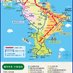

高市在深圳只和习近平握手，迎接规格低于他国后续
16 条帖子，合计浏览 1089 万次
之前的报道：11月17日午间“李强提前离开马尼拉，日中首脑没有碰面”
高市首相18日到深圳出席 APEC，这是她就任后第一次访华。习近平在欢迎晚宴前和她握了手，但正式的日中首脑会谈预计不会举行；她到机场时受到的迎接也比特朗普、普京简单得多。
- 握手
- 18日晚 APEC 欢迎晚宴前，议长习近平夫妇迎接各国首脑，也和高市握手、合影。这是去年11月高市就台湾有事答辩、日中关系恶化以来两人第一次接触；两人上一次见面，是去年10月31日在韩国 APEC 期间举行的首脑会谈。 共同社、读卖新闻、TBS
- 没有会谈
- 每日新闻说，日本政府原本就料到正式会谈会被搁置，但主要参加国的首脑见不到习近平，这种情况很少见；2022年起，日本首相已连续4年借 APEC 和习近平当面会谈。共同社说中方对日强硬的态度没有变，正式会谈很难实现；每日新闻还说，年底修订安保三文件可能让中方反弹更强。 每日新闻、共同社
- 迎接规格
- 高市在日本时间18日16点半过后到达深圳机场，接机的是一位当过大使的中方人员，没有安排隆重的欢迎。特朗普18点过后到达，习近平亲自去机场迎接，和他握手、拥抱；普京由中共政治局常委蔡奇迎接；其他首脑有仪仗兵和挥着花的青年欢迎。日本外务省干部说“外交上最低限度的礼仪都没有，实在失礼”。截至18日17点，中国中央电视台没有播出高市到达的画面。 每日新闻、TBS
- 合影位置
- 首脑集体合影里，习近平站在前排中间偏左，高市在后排右起第3个位置。 共同社
- 日俄接触
- 日俄两国政府在安排高市和普京在18日晚宴期间短暂站着交谈。如果谈成，这将是2022年2月俄罗斯入侵乌克兰以后，日俄首脑第一次直接对话。 读卖新闻
- 下一步
- APEC 19日进入正式讨论并闭幕，高市在深圳待到19日。美中俄首脑会谈定在19日下午，地点是离会场直线约9公里的迎宾馆“麒麟山荘”；会谈前，习近平已在深圳迎接了特朗普，特朗普也和普京、习近平握了手。 FNN、BBC
补充来源：高市首相と習氏は「握手」のみ 主要国で会談なしは異例 APEC、「最低限の礼儀もなく、本当に失礼」 高市首相の待遇に「格差」、高市首相が習近平国家主席と握手、正式会談は見送りか（読売新聞）
认为高市下舷梯时第一级落差大是机型差异造成的：日本专机是波音777，舱门离地约5到5.3米，美韩专机是747，约4.8到5.1米，扶梯车按747高度铺好地毯后接777，会有二三十厘米的落差。
 @chaoyinsukandao
@chaoyinsukandao指出欢迎晚宴上高市入场时，乐团演奏的是坂本九的《上を向いて歩こう》，用日本名曲迎接日本首相。
 Mi2
Mi2Steve Rosenberg 的分析文章认为，这场与习近平、特朗普的会谈对普京来说是一次重大胜利。
 BBC News
BBC News
GPT-6.2 Astra 与 Sol 评价两极
11 条帖子，合计浏览 80.1 万次
OpenAI 11月17日发布 GPT-6.2 Astra 和 GPT-6.2 Sol，付费用户已经可以在 ChatGPT Work、Codex 和 API 里使用。时间线上的评价分成两派，有人称赞，有人批评，这些都是个人账号的使用体验，没有官方评测数据。
- 发布内容
- Astra 面向复杂项目和专业工作，例如跨服务追查 bug；Sol 面向日常工作和多步骤的 agent 流程。两款模型即日起在 ChatGPT Work 和 Codex 向 Plus、Pro、Enterprise、Edu 用户开放，API 里的名称是 gpt-6.2-astra 和 gpt-6.2-sol；Pro 500 用户两款模型都能用 Ultrafast，Pro 200 用户也第一次能用 Ultrafast，先从 Sol 开始。 OpenAI 官方、TechRadar
- 价格
- Astra 每百万 token 输入8美元、输出40美元，比 GPT-6 Astra 便宜20%，缓存输入0.40美元，标价和 Claude Fable 5.2 相同；Sol 沿用 GPT-6.1 Sol 的2美元和10美元。Astra 接替 GPT-6 Astra，Sol 接替9月 DevDay 发布的 GPT-6.1 Sol。OpenAI 说，两款模型在高难度任务上用更少的输出 token 就能拿到更好的结果。 Developers Digest、Fello AI
- 安全评级
- 按 OpenAI 的 Preparedness Framework，GPT-6.2 的 system card 把两款模型的网络安全能力都评为 Critical，生物和化学能力评为 High。只有 Astra 的 AI 自我改进能力也达到 High，它是 OpenAI 对外发布的模型里第一个拿到这项评级的。 Unite.AI
- 说话难懂
- 有用户抱怨 Codex 说话难懂。Codex 团队的 Tibo 建议在自定义指令里加一句“默认用 ELI5（像给五岁孩子讲那样简单）的方式和我说话，我要求时再深入讲解”，还说团队正在处理这个问题。 X 用户
补充来源：GPT-6.2 Astra and Sol are now available、Pricing, Benchmarks and What to Switch、OpenAI Releases GPT-6.2 Astra With First
认为 OpenAI 模型的智力不输，差在理解人的真实意图；让 6.2 Astra 跑了一夜原本由 Opus 5.5 稳定完成的视频创作流程，结果审美差、执行漂移。
songkeys在自己的一项任务（帖子称为 RSI 任务）上觉得 Astra 6.2 明显强过 Fable 5.2，认为要用出模型最强的能力需要使用者花很大力气，日常工作用 Opus 5.5 就够了。
 Zesen Huang
Zesen Huang按跑分看 GPT-6.2 Astra 基本追上 Fable 5.2，6.2 Sol 基本追平 Opus 5.5，只是使用手感不如 Anthropic；并提醒三个月前 Opus 5 也被吐槽基本不可用。
AstroHan
晴海FLAG一套降到1亿2800万，植田称继续加息后续
25 条帖子，合计浏览 21.4 万次
之前的报道：11月17日晚间“东京分售公寓租金创新高，ドゥトゥール降1670万”
中介挂牌里又出现大幅降价：晴海FLAG一套3LDK从1亿9980万日元降到1亿2800万日元。日银总裁植田18日在国会表示会继续加息。各套房源的信息来自个人账号和中介挂牌，没有官方统计。
- 晴海降价
- HARUMI FLAG PARK VILLAGE T栋（地上50层、地下1层）19层一套朝西的3LDK，75.25平方米，2025年8月建成。挂牌价从1亿9980万日元起，先后降到1亿8800万、1亿7800万、1亿6800万日元，现在是1亿2800万日元。 X 用户
- 麹町降价
- ザ・パークハウス麹町三丁目7层一套2LDK，从2亿3900万日元降到1亿8800万日元。 X 用户
- 豊海降价
- THE TOYOMI TOWER MARINE＆SKY EAST 23层一套朝东的3LDK+WIC+SIC+S，73.58平方米，从1亿4480万日元降到1亿3980万日元，降了500万日元。这是中介エムティーハウス的专任房源，买方中介费打七折。 エムティーハウス
- 其他挂牌
- 勝どき的 THE TOKYO TOWERS SEA TOWER 17层一套1LDK，70.12平方米，朝西北，挂9980万日元，每坪470.5万日元；ザ・パークハウス板橋本町放出的取消户里，15层的1LDK+S（65.82平方米）挂9998万日元，每坪502万日元，13层的3LDK（70.02平方米）挂1亿998万日元，每坪519万日元；パークホームズ浅草橋16层一套1LDK，32.92平方米，挂6200万日元，每坪632万日元。 X 用户
- 植田表态
- 植田和男18日在参院特别委员会上说，现在的金融环境仍然宽松，日银会根据经济、物价和金融形势继续提高政策利率、调整宽松程度，但没有说下次加息的时间。他说要确认基调物价涨幅能否稳定在2%；日银10月29日到30日的会议把政策利率维持在1.25%。 BigGo ファイナンス、みんかぶ
补充来源：植田和男総裁、利上げ継続の姿勢を再表明 円安が食品価格を押し上げる恐れに警告、東京時間に伝わった指標・ニュース
听说湾岸有换房家庭先买了新房、原来的房子却卖不掉而陷入困境；以前最差还能按剩余房贷卖给收购业者，现在业者和买家都没有了，任意出售（与银行协商后卖掉抵押房）的情况在增加。
pepepe.special. 𝕏引用三井不动产 Realty 的资料：雷曼危机前坪单价高点到之后低点，青山涩谷跌51%，麻布赤坂六本木跌47%，番町麹町跌37%，广尾惠比寿跌36%，市谷四谷跌32%，认为有实际居住需求的区域更稳定。
 都心マンションツイート
都心マンションツイート算了一笔个人短期买卖的账：2.5亿日元买入，加上手续费、登记费和取得税约合2.75亿，挂3亿、议价后2.9亿卖出能赚1500万，再算上管理费和利息，回报和风险不相称，不如做指数投资。
pepepe.special. 𝕏
三菱UFJ集团5家公司约800万件信息经KARTE外泄后续
6 条帖子，合计浏览 304 万次
之前的报道：11月17日晚间“楽天証券和JINS同日传出大规模个人信息泄露”
プレイド的营销工具 KARTE 被入侵，三菱UFJ金融集团（MUFG）18日宣布，旗下三菱UFJ银行等5家公司共约800万件信息外泄，其中银行约650万件。同一天，DHC 也公布约1911万件顾客信息外泄。
- 银行范围
- 三菱UFJ银行外泄的是约650万件顾客的性别、年龄和居住地区（只到都道府县或政令指定都市），不含姓名、住址、电话、邮箱、账号、密码这些能确认本人身份或联系到本人的信息。银行说自己的系统没有被入侵，目前也没有发现信息被不当使用，资产和交易都没有受到影响。 读卖新闻、FNN、日本金融通信社
- 经过
- 三菱UFJ银行把网站和 App 上的顾客引导、访客行为数据分析委托给プレイド，外泄的是按合同提供给プレイド的数据。13日 KARTE 遭第三方非法访问，所有服务紧急停止；17日プレイド向银行报告了外泄范围。MUFG 已经停止和プレイド的数据联动。 FinTech Journal、共同社
- 集团其他
- 三菱UFJ信托银行外泄约23万件，包括性别、用网银会员号生成的识别符和 LINE 官方账号的用户识别号；三菱UFJモルガン・スタンレー証券外泄约28万件网上交易用户的性别和年龄段；三菱UFJ eスマート証券外泄约6万个证券账号和约10.5万件年龄信息，两者互不关联，公司会逐一通知可能受影响的客户；ウェルスナビ也确认有信息外泄。 日本金融通信社、读卖新闻、BigGo ファイナンス、共同社
- 其他企业
- DHC 外泄的是网店注册顾客的姓名、邮箱、出生日期等，约1911万件。另据 FNN 统计，しまむら外泄约700万件。 读卖新闻、NHK、FNN
补充来源：三菱UFJ銀行、顧客約650万件の性別・年齢・居住地域が漏えい 委託先のKART、サービス受託企業への不正アクセスで漏えい拡大…三菱ＵＦＪ銀行６５０万件、ＤＨＣ１、ＭＵＦＧで漏えい相次ぐ 傘下の５社で計８００万件
谈乐天证券的事时指出，金融业的 FISC 安全对策基准要求原则上不用正式环境的数据做测试，必须用时要脱敏、审批、用完删除并严格限制权限，认为这是合规和风险部门也就是经营层的责任。
きよごん称 SBI 证券账户被盗的受害者已组成受害者会打官司，SBI 一方以“账户被盗是客户的责任”为由拒绝赔偿。

暇潰し建议把券商对被盗损失的补偿比例作为选券商的一个标准，倾向选择野村。
 Daiki
Daiki
董事长在财报会上明言不让黄仁勋回任后续
5 条帖子，合计浏览 126 万次
之前的报道：11月17日晚间“NVIDIA设国安出口管制委员会，WSJ揭黄仁勋训人”
黄仁勋美国时间17日（日本时间18日）发文说，如果董事会认为他回来最符合各方利益，他愿意回任。几个小时后，董事长 Harvey Jones 在财报电话会开场宣布，董事会不打算让他回任 CEO。
- 黄仁勋表态
- 黄仁勋在社交媒体上承认自己在私生活上犯了“serious mistakes”，说收到员工、投资人、合作伙伴和客户的大量支持；如果董事会认为他回来最符合股东、员工、公司和国家的利益，他“honored to answer these calls”。要求他复职的联署签名已超过18万200人。 AP、Investors Hub
- 董事会
- Jones 在电话会开场说，董事会一致接受了黄仁勋的辞职，“does not intend to reinstate Jensen as CEO”，也不回答这方面的提问。他第一次公开说明辞职原因，是黄仁勋的个人行为不符合公司的行为准则、标准和文化规范。他说会尽快任命正式 CEO，但在找到合适人选前不会赶着定；临时 CEO Colette Kress 在电话会最后说“We've got this”。 AP、Yahoo Finance、Fortune
- 财报
- 第三季度（8月到10月）营收1158亿美元，是去年同期的两倍，比华尔街预期高约70亿美元；数据中心营收1076亿美元，净利润653亿美元，每股收益2.70美元，高于预期的2.48美元。公司预计截至1月的本季度营收1300亿美元，高于市场预期。盘后股价的涨幅说法不一：AP 写5.2%，Fortune 写3.84%。 AP、Fortune
- 国会问话
- 美国众议院三个负责中国和情报事务的委员会主席说，黄仁勋同意自愿接受笔录访谈，美国时间12月1日出席，公司法务总监 Tim Teter 12月2日出席。两位知情人士说，黄仁勋预计还会到参议院银行委员会作证。 AP
- 特朗普反应
- 特朗普美国时间17日到马尼拉后，称赞 NVIDIA 新设监督国家安全和贸易合规的董事会委员会是“good idea”。 AP
补充来源：Nvidia rejects Jensen Huang's offer to r、Nvidia Q3 shuts door on Huang's return a、Nvidia says it doesn't plan to reappoint
认为英伟达的垄断靠的是激进的产品路线图和抢占代工产能，新 CEO 一上来就战略收缩，其他厂商能拿到产能自己造芯片后，买英伟达芯片的会变少。
 Suwako — e
Suwako — e借这件事谈独立董事的弊端：职业董事遇到困难时容易明哲保身；引用的帖子称董事 Suzanne Nora Johnson 四个月前才加入董事会，却担任英伟达国家安全委员会主席。
Esther
Hydrogen接管全球搜索，Neon定价现身计费目录后续
11 条帖子，合计浏览 84.0 万次
之前的报道：11月16日晚间“Carbon 入门价据称12月1日起翻倍”
Google 宣布 Gemini 4 Hydrogen 已在全球的 Google 搜索上线，称这是搜索迄今最大的一次模型升级。还没发布的 Gemini 4 Neon 已经出现在 Google Cloud 的价格目录里，Google 还没有正式宣布这款模型。
- 搜索升级
- Hydrogen 成为全球 AI Mode 的默认模型，也负责处理最难的 AI Overview 查询，覆盖 AI Mode 支持的所有语言，取代了 Gemini 3.8 Flash。Google 说，新模型更能理解有错字或包含几个小问题的查询，会同时搜索多个相关子题（query fan-out），回答里有更多表格、地图和图片，给出的链接范围更广，多语言能力也更强。 Google 官方、Nokia Power User、Zeniteq
- Neon定价
- 11月18日，Google Cloud 的 SKU 目录列出 Gemini 4 Neon：文本输入每百万 token 3美元，输出15美元，缓存输入0.15美元；Batch 和 Flex 的输入减半到1.50美元，Flex 的输出降到7.50美元，Priority 是5.40美元和27美元。这个价格是 Hydrogen（1.50美元和7.50美元）的两倍。Argon 和 Carbon 12月1日起改按4美元和20美元的标准价收费，到时 Neon 比它们便宜25%。 OfficeChai、Pasquale Pillitteri、Crypto Briefing
- 发布迹象
- 11月16日，模型名“gemini-4-neon”出现在 Gemini 网页版的付费推广区，看来要付费订阅才能用；Antigravity CLI 1.5.11 版加入了名为 gemini-pro-orchestrator-neon 的模型。18日17点04分（UTC 8点04分）有报告说，在 Vertex 上还调用不了 Neon。 TestingCatalog、Digg
补充来源：Gemini 4 Hydrogen Rolls Out Globally in 、Google Appears To Be Preparing To Launch、Google prepares new Gemini 4 Neon model
在芯片设计中用 Hydrogen 写 RTL（描述硬件电路的代码），给一次审阅意见就能改好，3.8 Flash 要返工两三次，综合成本差不多，但省了很多时间。
 Awe Morris
Awe Morris算了一下，100美元的 Ultra 5x 大约能用出每月839美元的 API 额度，约为月费的8.4倍；作为对比，Codex 约15到30倍，Claude 约30到60倍。
 Jiaxi Cui
Jiaxi Cui由此想起之前 Claude 20x 订阅的漏洞，当时用了漏洞的人连同同一 IP 下的账号一起被封，提醒看到“0元”链接时要谨慎。
Ayaka Atelier
厚劳省审议会开始讨论被扶养人缴健保费
5 条帖子，合计浏览 186 万次
厚生劳动省17日在社会保障审议会医疗保险部会上开始讨论，是否要让不缴保费也能享受公的医疗保险的被扶养人缴纳保费。目前只是开始讨论，厚劳省说会慎重研究，还没有具体方案。
- 起因
- 双职工、夫妻两人都缴保费的家庭越来越多，有人认为现行做法不公平，有识者也提出医疗保险费应该一起讨论。负担增加预计会招来反对。 共同社、NHK
- 被扶养人
- 公司职员等加入的被用者保险约有6800万人，其中2500万人以上是被扶养人；只要生计由投保人负担，配偶、子女、父母、祖父母等三亲等以内的亲属都可以作为被扶养人。 日经
- 收入标准
- 被扶养人按年龄有收入标准，60岁以下的配偶主要以年收入不满130万日元为准。收入超过标准的，以及在员工超过50人的企业每周工作20小时以上的短时间劳动者，原则上不算被扶养人。 共同社
- 年金联动
- 厚劳省9月已经开始研究缩小“第3号被保险者制度”的对象范围，这项制度让主妇等人不缴保费也能领年金，讨论结果会反映到2030年的年金制度改革里。 共同社
- 金融所得
- 2026年5月通过的健康保险法修正案规定，不做确定申告的上市股票等的分红、利息和转让收益，要计入后期高龄者医疗制度的保险费；医疗保险部会提出的方针是按2028年的所得，从2029年8月开始实施。 大和総研
补充来源：被扶養者の保険料負担議論 公的医療巡り厚労省、公的医療保険 被扶養者の負担のあり方 国の審議会で議論始まる、後期高齢者医療制度への金融所得の勘案が投資行動に及ぼし得る影響
木原称起用ナオキマン是广告公司提案，上限1.5亿后续
4 条帖子，合计浏览 42.9 万次
之前的报道：11月17日晚间“政府宣传起用了阴谋论系 YouTuber”
官房长官木原稔18日说明，起用ナオキマン是承接这项宣传的大広和大広WEDO共同企业体提出的方案，内阁府采纳了；面向年轻人的安全保障宣传，经费上限是1.5亿日元。
- 政府说明
- 木原18日在记者会上说，这次宣传用的是“企划竞争方式”，先审查多家公司的方案，再交给得分最高的公司承接，起用这位 YouTuber 是中标公司提的方案。具体事业费他说很难公开，只说面向年轻人的宣传经费总额上限1.5亿日元；网页还有部分内容没公开，他说“正在制作”，更新时间没定。 共同社、TBS
- 招标记录
- 内阁府7月13日公告企划竞争，主题是“我が国を取り巻く安全保障環境の変化と総合的な国力の重要性”，对象是20到30多岁的人。内阁府公共采购记录显示，“大広・大広WEDO内安全保障・国力関連政府広報共同企業体”以1亿4999万9898日元中标；立宪民主党参议员田島麻衣子11日从内阁府听取说明，说共有7家公司提交方案。 よい旅ニュース通信
- 预算构成
- 政府为年内修订安保三文件，安排了最多3亿日元的宣传经费，分别面向40岁以上的女性和20到30多岁的男女，各设上限1.5亿日元。面向40岁以上女性的内容，是丈夫“くにお”给妻子“たみよ”讲解食品、能源、物流和安全保障的关系；政府在11月5日的国会答辩里已经说过，面向年轻人的宣传另有同样1.5亿日元的上限。 日刊现代、女性自身
- 电通受托
- 起用 Mrs. GREEN APPLE 的虚假信息对策宣传，属于内阁府“ICT リテラシー”政府广报业务，电通7月27日以3亿日元承接。加上ナオキマン的项目，两项合同总额约4.5亿日元。 よい旅ニュース通信
- 批评报道
- 日刊现代以“又一次大炎上”报道此事，说ナオキマン发布过“高市首相是天皇后裔”的说法，还把灾害、医疗方面没有根据的信息当作“都市传说”来介绍；内阁府的广报经费从下一年度起预计大幅增加到约280亿日元。 日刊现代
- Mステ
- Mrs. GREEN APPLE 暂停出演20日的《Music Station》，原因是主唱大森元貴15日被诊断为A型流感，18日和19日的长野公演也已经延期，和这次宣传无关。 Oricon、Modelpress
补充来源：木原官房長官「広告会社の提案」 政府広報に陰謀論系人材起用で、都市伝説系YouTuber起用の政府広報、大広が受託か 4日前公開の偽・誤情報対、「高市首相が天皇末裔説」を発信の陰謀論系ユーチューバーに税金1.5億円…また政府
值得单独看的帖子
- 让 agent 自己写、验、合代码
Lauren Tan 在 AI Engineer Code Summit 上的17分钟演讲：上个月她一人向生产环境合入3000个 PR，回滚率约0.5%。做法包括用代码库约束直接封死易错写法、agent 每次出错就把教训写成 lint（静态检查）规则、让 agent 自己跑测试和截图证明功能正常，帖子附有演讲视频。
 Hux，赞 5,710，含视频
Hux，赞 5,710，含视频 - Vercel：agent 评测实战
Vercel 博客用一个模拟咖啡下单的命令行工具，完整演示怎么给 agent 搭评测（eval）。例子里 Codex 每10次“通过”有9次根本没搜索就放弃，原因是评分程序只检查了“没有下单”；文章把测试分成确定性测试、单轮 eval 和端到端 eval 三层，文末附了可以直接交给 coding agent 的搭建 prompt。
 Xudong Han，赞 26
Xudong Han，赞 26 - CMU 免费开放 CS 课程录像
卡内基梅隆大学11月16日上线 CS Learn 平台，免费公开完整课堂录像，包括入门的计算原理（15-110）、生成式 AI（10-423）、大模型机器学习（10-605）和 AI 智能体等课程。帖子还附了 CMU 数据库组整理各类数据库系统的 Database of Databases。
 灰狐，赞 148，含图
灰狐，赞 148，含图 - Qwen 的 pi 适配版开源
被引用的 clem 的帖子介绍，用强化学习加 LoRA 适配器（只训练少量附加参数的微调方法）把 Qwen3.8-27B 专门适配到 pi coding agent：SWE-bench Pro（Hard 51）pass@1 从29.4%升到62.7%，Terminal-Bench 2.1 从39.5%升到55.8%，每个任务的工具调用减少55%到62%。权重和方法说明都已在 Hugging Face 公开。
 Versun，赞 17
Versun，赞 17 - Claude Code 实验新模式
ClaudeDevs 官方介绍 Claude Code 的实验功能 Code Mode：Claude 会写脚本把多个工具串起来用，长命令还在运行时也能回答你。设置环境变量 CLAUDE_CODE_EXPERIMENTAL_CODE_MODE=1 即可开启，文档在 code.claude.com/docs/en/code-mode。
 Melvyn • Builder，赞 1,132
Melvyn • Builder，赞 1,132 - Claude Code 漏报提示注入
帖子转述一项125次运行的审计：Claude Code v2.1.327 的无头模式（-p，非交互运行）会去掉“发现可能的提示注入（藏在文件里诱导模型的指令）时要提醒用户”这条系统指令。测试中 Opus 5.5 没有泄露 .env 密钥，但默认运行有45%、自动权限运行有55%没有提醒；用 --append-system-prompt 补回这句后20次全部提醒，在 CI 里用 Claude Code 的人可以照着补上。
bebu，赞 5 - GPT-6.2 提示词官方指南
建议把官方的 GPT-6.2 Astra 提示词指南丢给 Codex，让它优化你的提示词和 AGENTS.md。帖子认为最有用的两点：提需求时顺便说明验收会看什么，它会自己判断做到什么程度；AGENTS.md 只写从代码里看不出来的约定。
Xudong Han，赞 126 - Morty：远程连回本机 agent
开源小工具，让你人不在电脑前时也能用浏览器继续操作电脑上的 Claude Code、Codex 或 Pi 会话。不用注册、不装 App，在会话里粘贴帖子给的一句 prompt，agent 会自己读取说明完成安装；端到端加密，聊天记录只存在自己电脑上，中继跑在 Cloudflare 上，目前免费。
Gangqiang Yao，赞 37，含视频 - 房东涨租的法律依据
介绍借地借家法第32条：税负增加或租金与周边行情有差距时，房东可以请求涨租，谈不拢先走调停。结论出来前租客可以按自己认为合理的金额支付，但之后差额要加年10%的利息。
おの 不動産投資家×不動産会社経営×空室，赞 88 - Lumio：开源搜索启动器
免费开源的 Spotlight / Raycast 轻量替代品，用 Rust 做本地搜索、SwiftUI 做界面，可以搜 App、文件、剪贴板历史，以及图片和 PDF 里的文字。
 Geek，赞 2，含视频
Geek，赞 2，含视频